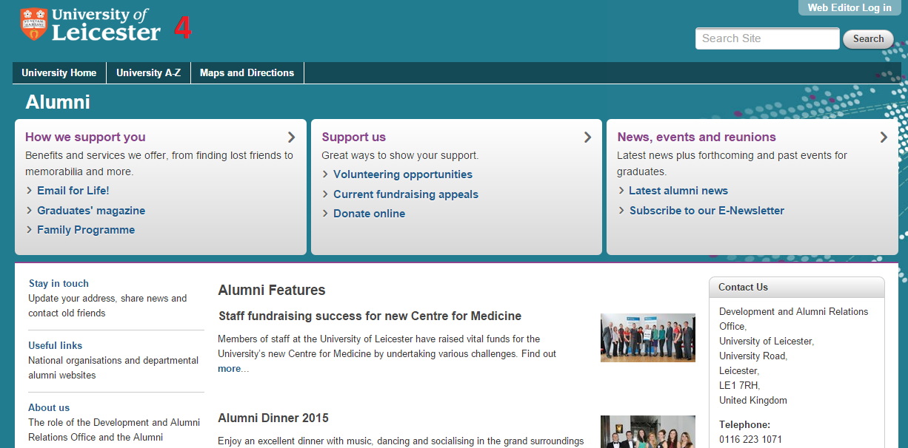
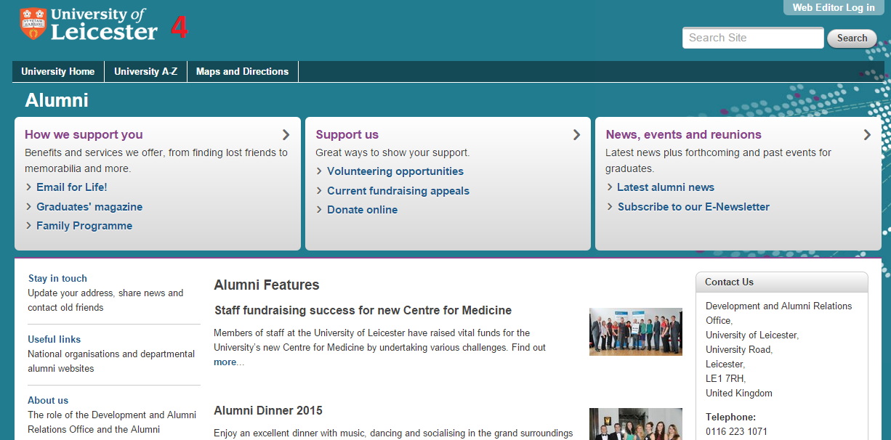
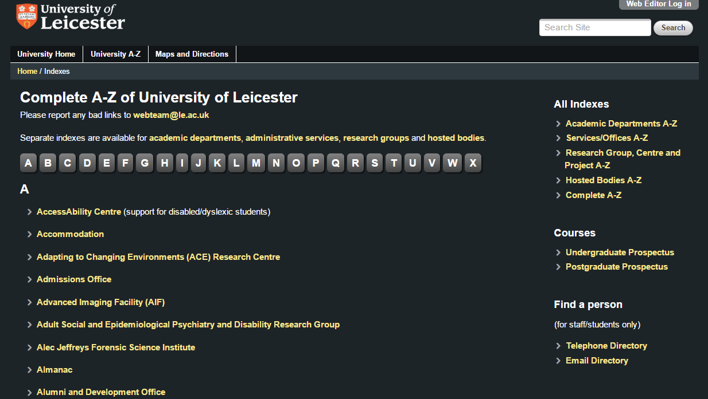
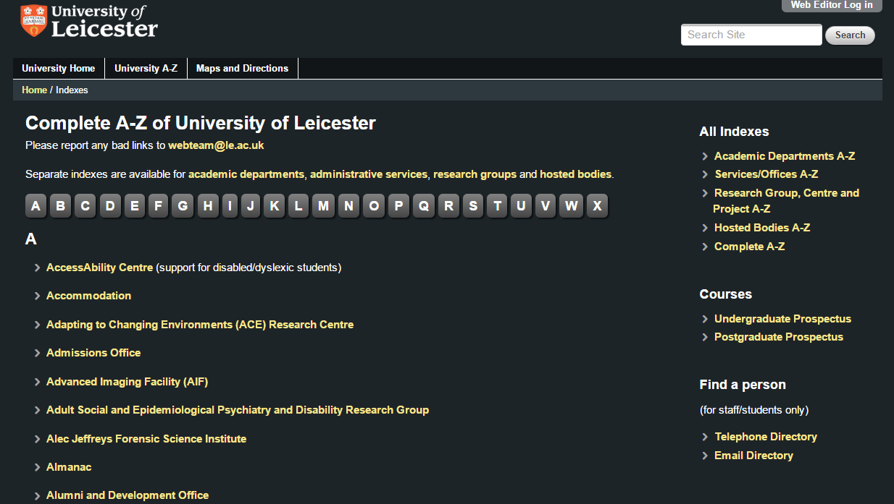

Consistency and standards
Users should not have to wonder whether different words, situations, or actions mean the same thing. Follow platform conventions.
Below are the four level two pages featured on the front page. It is possible to identify a number of difference across them.
- Background and navigation bar color is different across all pages, although it can be considered as different design choice.
- The top part including the logo and search field is consistent across all pages.
- On the static navigation bar, page 1 and 2 uses the word "Home", while page 3 and 4 use a different word "University Home".
- The layout is very inconsistent between page 1, 2 and 3/4. Large size images are employed to high-light research areas in page 1, while page 2, 3 and 4 are heavily text orientated. Page 2 and 4 does not have a vertical navigation bar, while page 1 and 3 does.
{kind=link}
{kind=link}
 

{kind=link}
There are some pages that do a particularly poor job in terms of maintaining consistency with the rest of the site. The left image uses Google search without any customization, while the right image does not have navigation bar at the right with its own design style.
 

{kind=link}